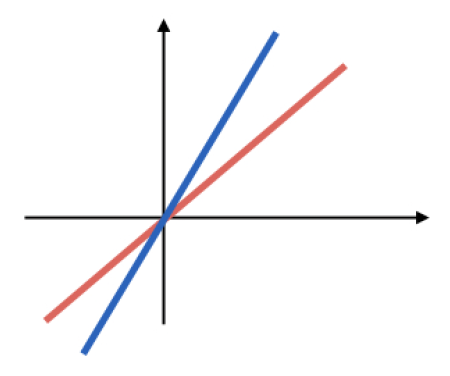
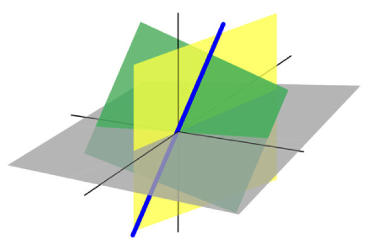
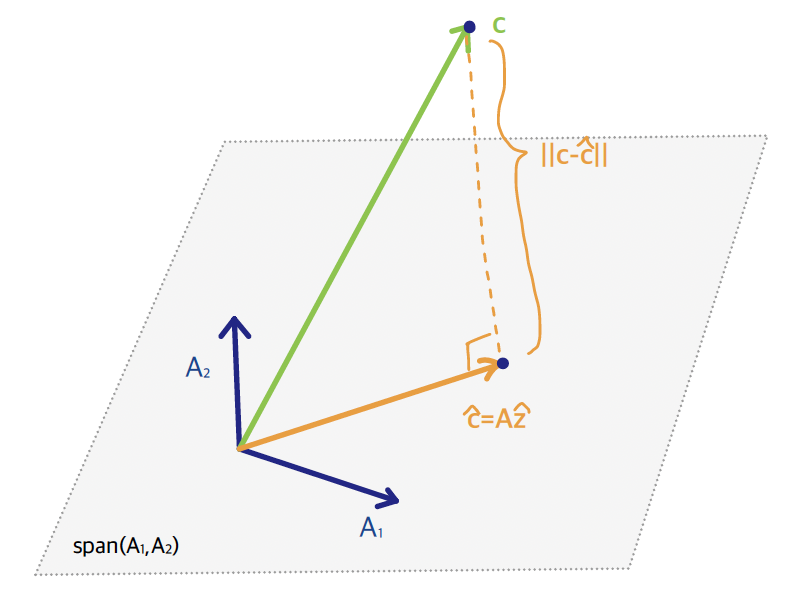
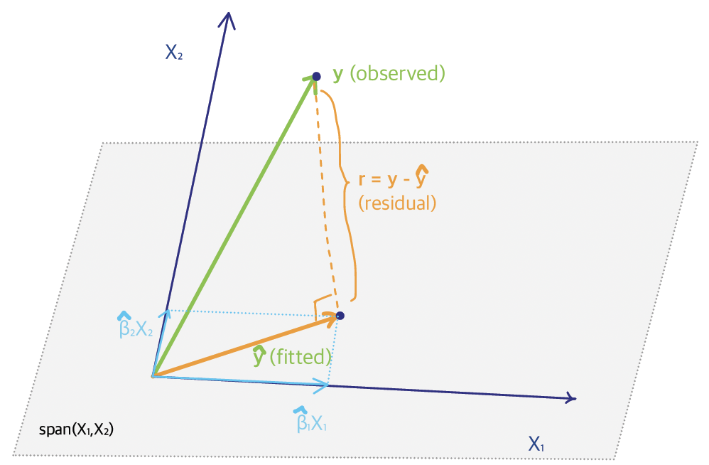

2.3 Least-Squares & Normal Equations
In this section, we focus on the system of linear equations that we solve to obtain the least-squares estimators for \(\beta\). Recall, that we want to find a vector \(\hat{\beta}\) that minimizes
\[\min_{\beta} ||\mathbf{y} - \mathbf{X} \beta||^2\] Any vector that provides a minimum value of this expression is called a least-squares solution.
The set of all least squares solutions is precisely the set of solutions to the normal equations \[(\mathbf{X}^T \mathbf{X}) \beta = \mathbf{X}^T \mathbf{y}\] There is a unique solution if and only if \(rank(\mathbf{X}) = p+1\) in which case \(\bigl(\mathbf{X}^T \mathbf{X}\bigr)\) is invertible.
System of Linear Equations
Linear Algebra Review
Let us review a few facts from linear algebra related to solutions of a system of linear equations. For simplicity of notation, we use the generic system of equations: \[\mathbf{A} z = c\] where \[ \mathbf{A}=\left(\begin{array}{cccc} a_{11} & a_{12} & \cdots & a_{1k} \\ a_{21} & a_{22} & \cdots & a_{2k} \\ \vdots & \vdots & \ddots & \vdots\\ a_{m1} & a_{m2} & \cdots & a_{mk} \\ \end{array} \right),\quad z =\left(\begin{array}{c} z_{1} \\ z_{2} \\ \vdots\\ z_{m} \\ \end{array} \right),\quad c =\left(\begin{array}{c} c_{1} \\ c_{2} \\ \vdots\\ c_{m} \\ \end{array} \right) \]
Denote by \(\mathbf{A}_{i} = \bigl( a_{1i}, a_{2i}, \ldots, a_{mi}\bigr)^T\) the vector representing the \(i\)th column of \(\mathbf{A}\). Then, \(\mathcal{C}(\mathbf{A})\) is the space generated by the columns of \(\mathbf{A}\), i.e. the span of \(\bigl\{\mathbf{A}_1, \mathbf{A}_2, \ldots, \mathbf{A}_{k}\bigr\}\).
Definition
The span of a collection of vectors \(\bigl(\mathbf{A}_1, \mathbf{A}_2, \ldots, \mathbf{A}_{k}\bigr)\) is the set of all linear combinations of these vectors: \[\begin{align*} &span \bigl(\mathbf{A}_1, \mathbf{A}_2, \ldots, \mathbf{A}_{k}\bigr) \\ &= \Bigl\{ d_1 \mathbf{A}_1 + d_2 \mathbf{A}_2 + \ldots + d_k \mathbf{A}_{k}, \text{ for any constants } d_1, \ldots, d_k \in \mathbb{R} \Bigr\} \end{align*}\]


Solving the System of Equations \(\mathbf{A}z=c\)
For the system \(\mathbf{A} z = c\) to have a solution, \(c\) must lie in the column space of \(\mathbf{A}\), i.e. \(c \in \mathcal{C}(\mathbf{A})\). This follows directly from the definition of matrix multiplication: \[\mathbf{A} z = c \, \Leftrightarrow \, c = z_1 \mathbf{A}_1 + \ldots + z_k \mathbf{A}_k\]
When \(c \notin \mathcal{C}(\mathbf{A})\), we instead seek the vector \(\hat{c} \in \mathcal{C}(\mathbf{A})\) that is closest to \(c\). In that case, the equation \(\mathbf{A} z = \hat{c}\) has a solution, and \(\hat{c}\) comes as close as possible to the original vector \(c\). To obtain \(\hat{c}\) we project \(c\) orthogonally onto \(\mathcal{C}(\mathbf{A})\) by multiplying both sides by \(\mathbf{A}^T\):

\[\mathbf{A}^T\mathbf{A} z = \mathbf{A}^T c\] * These are the normal equations.
In the sketch to the right, \(\mathcal{C}(\mathbf{A})\), the space spanned by the columns of \(\mathbf{A}\), is a flat surface, and \(c\) is a point lying off that flat surface. The shortest distance from the point \(c\) to the plane \(\mathcal{C}(\mathbf{A})\) is the line segment orthogonal to the plane.
The normal equations locate the point in \(\mathcal{C}\bigl(\mathbf{A}\Bigr)\) that is closest to \(c\) by means of an orthogonal projection.
Geometric Representation of LS
Translating the preceding discussion into the linear-regression setting:

\(\mathcal{C}(\mathbf{X})\) is the subspace spanned by the columns of the design matrix, i.e. by the predictors \(X_1\), \(X_2\), \(\ldots\), \(X_p\). It is a flat subspace of \(\mathbb{R}^n\).
The response \(\mathbf{y}\) is a vector lying off this subspace, and the fitted value \(\hat{\mathbf{y}}\) is the orthogonal projection of \(\mathbf{y}\) onto \(\mathcal{C}(\mathbf{X})\).
The residual vector \(\mathbf{r} = \mathbf{y} - \hat{\mathbf{y}}\) is orthogonal both to \(\hat{\mathbf{y}}\) and to the entire subspace \(\mathcal{C}\bigl( \mathbf{X} \bigr)\).
In other words, the least-squares method decomposes the data vector \(\mathbf{y}\) into two orthogonal components: \[\mathbf{y}_{n\times 1} = \hat{\mathbf{y}}_{n\times 1} + \mathbf{r}_{n\times 1}\]